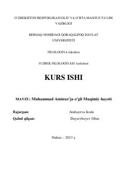

MAMuhammad Aminxo'ja Muqimiyning hayoti va ijodiy faoliyatiga bag'ishlangan ilmiy-tadqiqot ishi.
Ushbu kurs ishi XIX asr oxiri va XX asr boshlaridagi o'zbek adabiyotining yirik namoyondasi Muhammad Aminxo'ja Muqimiyning hayoti va ijodiy merosiga bag'ishlangan. Ishda shoirning lirik va hajviy asarlari, uning ijodini o'rganish tarixi hamda davr ijtimoiy-siyosiy muhitining shoir ijodiga ta'siri tahlil qilinadi.